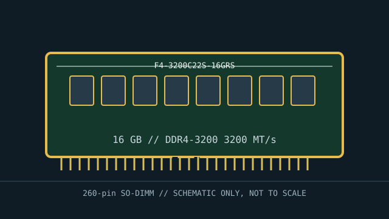

[ MANUFACTURER MODEL // MEMORY / RAM ]
G.SKILL Ripjaws F4-3200C22S-16GRS
A specific DDR4 laptop memory module identified by manufacturer part number F4-3200C22S-16GRS. The stated 16 GB capacity, speed, latency, nominal voltage, and module format describe this SKU; check the specimen label and SPD for revision-specific details.

EXACT SKU: G.SKILL Ripjaws F4-3200C22S-16GRS. Specifications identify the listed product family. Confirm the printed part number, revision/date code, SPD tables, and module markings on the specimen before service; memory vendors may change component sourcing across revisions.
Model specifications
| Manufacturer / SKU | G.SKILL Ripjaws F4-3200C22S-16GRS |
|---|---|
| Module class | Unbuffered, non-ECC notebook module; 260-pin SO-DIMM |
| Capacity / data rate | 16 GB; DDR4-3200 (3200 MT/s) |
| CAS latency / voltage | CL22-22-22; nominal module voltage 1.20 V. Profile or host selection may alter the operating data rate/timings. |
| Organization / ECC status | Single-module, non-ECC unbuffered laptop memory; rank and chip arrangement can vary by revision. This is non-ECC memory and cannot substitute for a host-required ECC module. |
| Form factor / generation | 260-pin SO-DIMM, DDR4; DDR generation notches and signaling are incompatible across generations. |
| Host platform limitations | Requires a DDR4 SO-DIMM host with 16 GB-per-slot support. The module operates at the lower supported rate if the CPU, firmware, or memory profile cannot run 3200 MT/s. Requires a DDR4 SO-DIMM slot and a host memory controller/firmware supporting 16 GB per module and its device organization. Requires a DDR4 SO-DIMM host with 16 GB-per-slot support. The module operates at the lower supported rate if the CPU, firmware, or memory profile cannot run 3200 MT/s. |
Compatibility & service notes
- Requires a DDR4 SO-DIMM slot and a host memory controller/firmware supporting 16 GB per module and its device organization. Requires a DDR4 SO-DIMM host with 16 GB-per-slot support. The module operates at the lower supported rate if the CPU, firmware, or memory profile cannot run 3200 MT/s.
- Not compatible with a socket for another DDR generation: DDR4 pin count and keying do not make it interchangeable with DDR3, DDR4, or DDR5 modules of another generation.
- This is non-ECC memory and cannot substitute for a host-required ECC module. This module is unbuffered and is not a registered or load-reduced server DIMM.
- Follow the notebook service manual for power-down, battery isolation, and ESD procedures. Handle by the edges, align the notch, and never force the module into the slot.
- Before ordering a second module, confirm the exact platform maximum per slot, permitted ranks/densities, supported channel configuration, BIOS version, and qualified-memory guidance; mixed modules may operate at the slowest common settings or fail memory training.
Preservation record
Photograph the complete label and notch, preserve manufacturer part number and revision, retain an SPD dump when available, and record the host model, CPU, BIOS version, slot/channel position, reported operating data rate, and memory-test result.
Manufacturer & standards sources
- G.SKILL exact product specificationManufacturer reference for this exact part number or its product specification; use it to confirm the marketed module configuration.
- JEDEC JESD79-4 — DDR4 SDRAMGeneration-level electrical and signaling context. JEDEC defines the DDR interface, not whether a particular laptop supports this capacity, profile, rank, or density.
Use the laptop vendor’s service manual and CPU memory-controller documentation for final compatibility. Product revisions and SPD tables should be checked on the physical specimen.